Matrix rain screensaver for Swing applications
In order to use this screensaver in your application, run it under
laf-widget compliant
look and feel (such as Substance),
place matrix-rain.jar in the classpath and press Ctrl+Alt+M
in your frame.

A few screenshots from the screensaver:
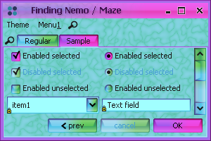
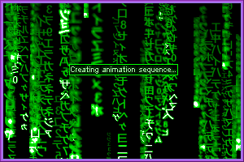
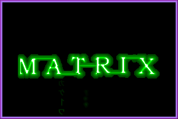
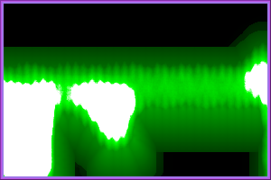
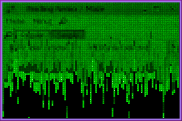
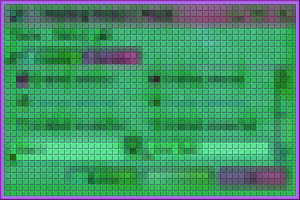
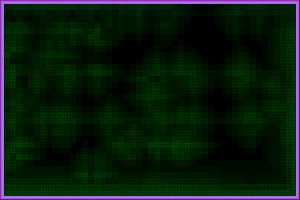
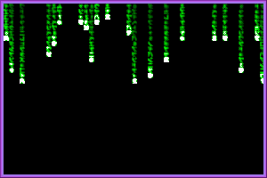
 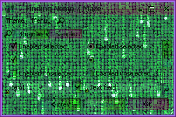
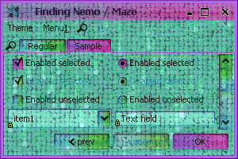
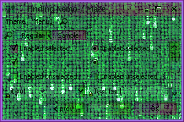
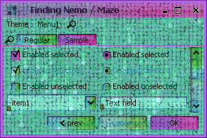